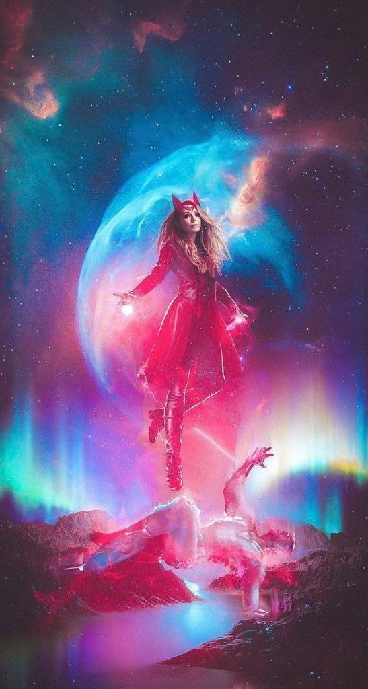
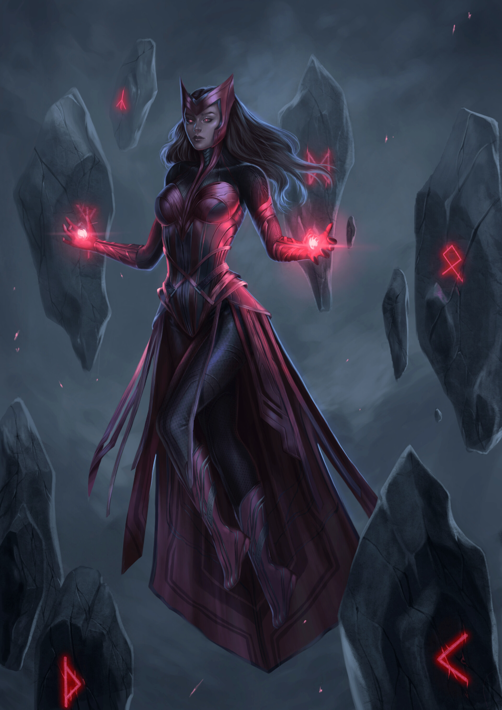
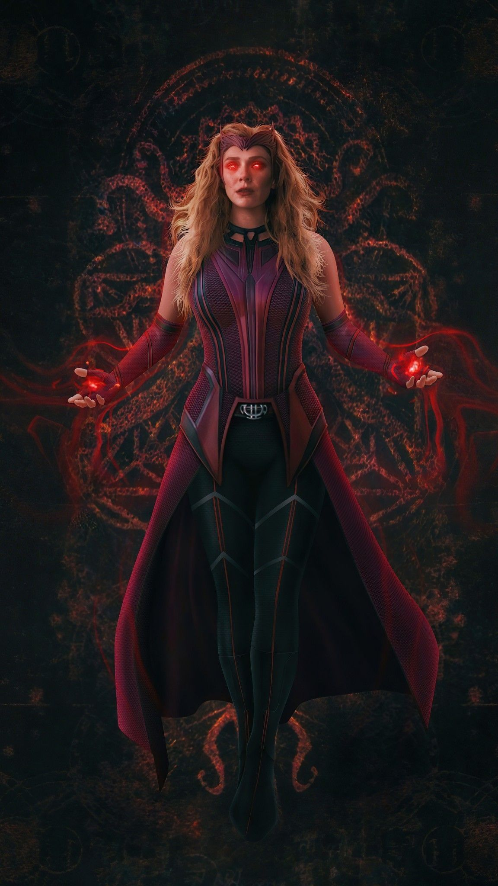

Historia General

Superheroína ficticia que aparece en los cómics publicados por Marvel Comics. creada por Stan Lee y Jack Kirby, debutando en la denominada Edad de Plata de los Cómics. Posee habilidades para alterar la realidad de formas no especificadas y es, además, una poderosa hechicera. Más tarde, se convertiría en miembro regular de Los Vengadores.
Datos Personales
- Ocupación: Aventurera profesional, ama de casa
- Ocupación: Aventurera profesional, ama de casa
- Situación legal: Antigua ciudadana de Transia, naturalizada norteamericana, sin antecedentes penales
- Lugar de Nacimiento: Montaña Wundagore, Transia, Europa
- Estado Civil: Casada
- Base de Operaciones: Leonia, New Jersey
- Antiguos Grupos de Afiliación: Antiguo miembro de la Hermandad de Mutantes Diabólicos, miembro reserva de los Vengadores
Habilidades
- Proyección de energía
- Telepatía
- Manipulación de las probabilidades
- Alteración y distorsión de la realidad
- Telequinesis
- Fragoquinesis
- Esferas de energía
- Wanda ha estudiado ocultismo y misticismo con Agatha Harkness.
Experiencia (Peliculas y otros medios)
- Universo cinematográfico de Marvel: Captain America: The Winter Soldier (2014)
- Avengers: Age of Ultron (2015)
- Capitán América: Civil War (2016)
- Avengers: Infinity War (2018)
- Avengers: Endgame (2019)
- Disney+, WandaVision (2021).
- Doctor Strange en el Multiverso de la Locura (2022).
- Disney+, WandaVision (2021).
- películas animadas
- juegos de arcade y de video
- series de televisión
- figuras de acción y cartas coleccionables
Galeria


